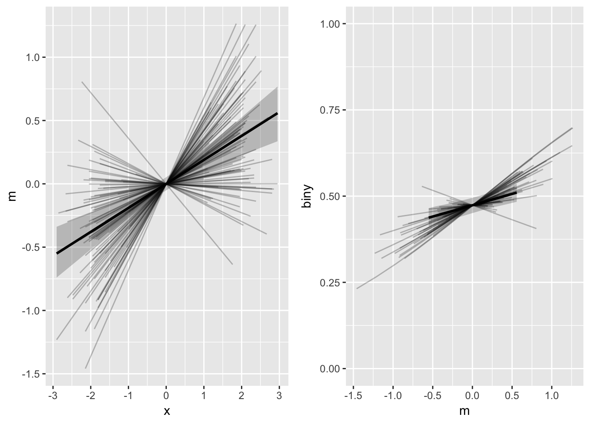
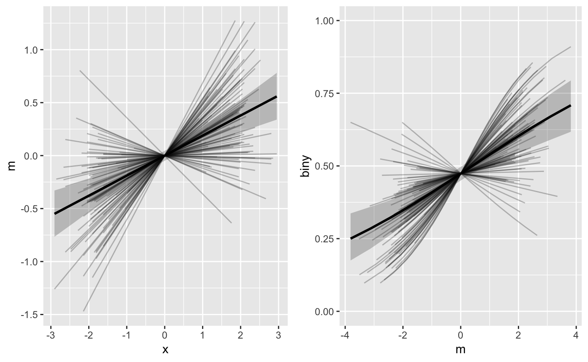

library(tidyverse)
library(bmlm)Consider a mediation model in which Y is binary:
## # A tibble: 6 x 5
## id x m y biny
## <int> <dbl> <dbl> <dbl> <int>
## 1 101 0.3333333 0.9828781 -1.4420726 0
## 2 101 0.3333333 0.9279833 0.1441343 0
## 3 101 0.3333333 -0.7188603 -1.6259807 0
## 4 101 1.3333333 0.7450007 1.9219121 1
## 5 101 -1.6666667 -0.1241668 -1.9324941 0
## 6 101 -0.6666667 -1.2678081 0.6881956 1fit_biny <- mlm(d = BLch9_biny,
id = "id",
y = "biny", binary_y = TRUE,
cores=4, iter = 500)mlm_summary(fit_biny) %>%
knitr::kable()| Parameter | Mean | SE | Median | 2.5% | 97.5% | n_eff | Rhat |
|---|---|---|---|---|---|---|---|
| a | 0.19 | 0.04 | 0.19 | 0.12 | 0.26 | 665 | 1 |
| b | 0.27 | 0.05 | 0.27 | 0.16 | 0.37 | 783 | 1 |
| cp | 0.23 | 0.06 | 0.24 | 0.13 | 0.34 | 1000 | 1 |
| me | 0.10 | 0.03 | 0.10 | 0.06 | 0.16 | 410 | 1 |
| c | 0.34 | 0.06 | 0.34 | 0.22 | 0.46 | 760 | 1 |
| pme | 0.31 | 0.08 | 0.31 | 0.18 | 0.48 | 634 | 1 |
The mlm_spaghetti_plot() function produces figures in which the horizontal axis values of the M-Y graph (right panel, below) correspond to the vertical axis values of the X-M graph (left panel, below):
pasta <- mlm_spaghetti_plot(fit_biny, BLch9_biny,
id="id", x="x", m="m", y="biny",
binary_y=T)
gridExtra::grid.arrange(
pasta[[1]],
pasta[[2]] + coord_cartesian(ylim = 0:1),
nrow = 1)
It is important to note that the fitted values (lines) on the right panel of this figure are therefore based on the variation of the fitted values in the left panel, and not on the observed values of m. This behavior usually makes sense and is the default option for mlm_spaghetti_plot(). However, sometimes users may want to plot the M-Y relationship’s (b path’s) fitted values with the observed data values of M on the horizontal axis instead.
To do this, set mx = "data":
pasta2 <- mlm_spaghetti_plot(fit_biny, BLch9_biny,
id="id", x="x", m="m", y="biny",
binary_y=T, mx = "data")
gridExtra::grid.arrange(
pasta2[[1]],
pasta2[[2]] + coord_cartesian(ylim = 0:1),
nrow = 1)
As result, the horizontal axis variability for the b path figure (right panel) is much greater. However, the two panels are no longer directly comparable (vertical axis in left panel doesn’t match horizontal axis of right panel) or interpretable as the model’s implied mediated effect path.
Thanks for reading. Please notify the package’s developer on GitHub if you have further questions or comments.